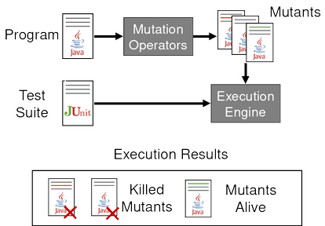

Mutation testing
How do we know if we tested enough? For example, in the structural-based testing chapter, we discussed line coverage, branch coverage, and MC/DC. In the model-based testing chapter, we discussing transition coverage and path coverage. All these adequacy criteria measure how much of the program is exercised by the tests we devised.
However, these criteria alone might not enough to determine the quality of the test cases. In practice, we can exercise a large part of the system, while testing very little.
Suppose a simple class with a single method:
public class Division {
public static int[] getValues(int a, int b) {
if (b == 0) {
return null;
}
int quotient = a / b;
int remainder = a % b;
return new int[] {quotient, remainder};
}
}
Now, imagine a tester writing the following test cases:
@Test
public void testGetValues() {
int[] values = Division.getValues(1, 1);
}
@Test
public void testZero() {
int[] values = Division.getValues(1, 0);
}
These tests gets us to 100% branch coverage. However, you probably also noticed that something is missing in these tests: the assertions! These tests will never fail!
Fault Detection Capability
Let's discuss one more adequacy criterion: the fault detection capability. It indicates the test's capability to reveal faults in the system under test. The more faults a test can detect, in other words, the more faults a test fails on, the higher its fault detection capability. Using this criterion, we can indicate the quality of our test suite in a better way than with just the coverage metrics we have so far.
The fault detection capability does not just regard the amount of production code executed, but also the assertions made in the test cases. For a test to be adequate according to this criterion, it has to have a meaningful test oracle (i.e., meaningful assertions).
The fault detection capability, as a test adequacy criterion, is the fundamental idea behind mutation testing. In mutation testing, we change small parts of the code, and check if the tests can find the introduced fault.
In the previous example, we made a test suite that was not adequate at all, according to the fault detection capability. As there were no assertions, the tests would never find any faults in the code.
@Test
public void testGetValues() {
int[] values = Division.getValues(1, 1);
assertEquals(1, values[0]);
assertEquals(0, values[1]);
}
@Test
public void testZero() {
int[] values = Division.getValues(1, 0);
assertNull(values);
}
Tests with assertions check if the result of the method is what we expect. We have a test oracle now.
To see how the values in a test case influence the fault detection capability, let's create two tests, where the denominator is not 0.
@Test
public void testGetValuesOnes() {
int[] values = Division.getValues(1, 1);
assertEquals(1, values[0]);
assertEquals(0, values[1]);
}
@Test
public void testGetValuesDifferent() {
int[] values = Division.getValues(3, 2);
assertEquals(1, values[0]);
assertEquals(1, values[1]);
}
For the fault detection capability, we want to see if the tests catch any faults that could be in the code.
This means we have to go back to the source code and introduce an error:
public class Division {
public static int[] getValues(int a, int b) {
if (b == 0) {
return null;
}
int quotient = a * b; // the bug was introduced here
int remainder = a % b;
return new int[] {quotient, remainder};
}
}
We replace the division by a multiplication; a clear bug.
If we run our tests with the buggy code, we see that the test with the values 1 and 1 (the testGetValuesOnes() test) still passes, but the other test (the testGetValuesDifferent()) fails.
This indicates that the second test has a higher fault detection capability.
Even though both tests exercise the method in the same way and execute the same lines, we see a difference in the fault detection capability.
This is because of the different input values for the method and the different test oracles (assertions) in the tests.
In this case, the input values and test oracle of the testGetValuesDifferent() test can better detect that bug.
Hypotheses for Mutation Testing
We are now ready to generalize the idea. The idea of mutation testing is to assess the quality of the test suite. This is done by manipulating the source code a bit and running the tests with this manipulated source code. If we have a good test suite, at least one of the tests will fail on this changed (buggy) code. Following this procedure, we get a sense of the fault error capability of our test suite.
In mutation testing we use mutants. The mutants are the defects, or faults, that we introduce in the source code and then use to determine the quality of the test suite.
A big question regarding the mutants is what their size should be. We can change single operations, whole lines or even multiple lines of code. What would work best?
Mutation testing and the answer to this question are based on the following two hypotheses:
The Competent Programmar Hypothesis (CPH): Here, we assume that the program is written by a competent programmer. More importantly, this means that given a certain specification, the programmer creates a program that is either correct, or it differs from a correct program by a combination of simple errors.
The Coupling Effect: The coupling effect hypothesis states that simple faults are coupled to more complex faults. In other words, test cases that detect simple faults, will also detect complex faults.
Based on these two hypotheses, we can determine the size that the mutants should have. Realistically, following the competent programmer hypothesis, the faults in actual code will be small. This indicates that the mutants' size should be small as well. Considering the coupling effect, test cases that detect small errors, will also be able to detect larger, more complex errors.
Terminology
To talk about mutation testing in a depth way, let's define some terms:
- Mutant: Given a program , a mutant called is obtained by introducing a syntactic change to . A mutant is killed if a test fails when executed with the mutant.
- Syntactic Change: A small change in the code. Such a small change should make the code still valid, i.e., the code can still compile and run.
- Change: A change, or alternation, to the code that mimic typical human mistakes. We will see some examples of these mistakes later.
We illustrate mutation testing with these concepts in the example below.
Suppose we have a Fraction class with a method invert().
public class Fraction {
private int numerator;
private int denominator;
// ...
public Fraction invert() {
1. if (numerator == 0) {
2. throw new ArithmeticException("...");
}
3. if (numerator == Integer.MIN_VALUE) {
4. throw new ArithmeticException("...");
}
5. if (numerator < 0) {
6. return new Fraction(-denominator, -numerator);
}
7. return new Fraction(denominator, numerator);
}
}
We have a small test suite for this method as well.
@Test
public void testInvert(){
Fraction f = new Fraction(1, 2);
Fraction result = f.invert();
assertEquals(2, result.getFloat(), 0.00001);
}
@Test
public void testInvertNegative(){
Fraction f = new Fraction(-1, 2);
Fraction result = f.invert();
assertEquals(-2, result.getFloat(), 0.00001);
}
@Test
public void testInvertZero(){
Fraction f = new Fraction(0, 2);
assertThrows(ArithmeticException.class, () -> f.invert());
}
@Test
public void testInvertMinValue(){
int n = Integer.MIN_VALUE;
Fraction f = new Fraction(n, 2);
assertThrows(ArithmeticException.class, () -> f.invert());
}
We have two tests for some corner cases that throw an exception, and two more "happy path" tests. Now, we want to determine the quality of our test suite, using mutation testing.
First, we have to create a mutant by applying a syntactic change to the original method. Keep in mind that, because of the two hypotheses, we want the syntactic change to be small: one operation/variable should be enough. Moreover, the syntactic change is a change, hence it should mimic mistakes that could be made by a programmer.
For the first mutant we change line 6.
Instead of -numerator we just say numerator.
The mutant looks like as follows:
public class Fraction {
private int numerator;
private int denominator;
// ...
public Fraction invert() {
1. if (numerator == 0) {
2. throw new ArithmeticException("...");
}
3. if (numerator == Integer.MIN_VALUE) {
4. throw new ArithmeticException("...");
}
5. if (numerator < 0) {
6. return new Fraction(-denominator, numerator);
}
7. return new Fraction(denominator, numerator);
}
}
If we would execute the test suite on this mutant, the testInvertNegative() test will fail, as result.getFloat() would be positive instead of negative.
Another mistake could be made in line 1.
When we studied boundary analysis, we saw that it is important to test the boundaries due to off-by-one errors.
We can make a syntactic change by introducing such an off-by-on error.
Instead of numerator == 0, in our new mutant we make it numerator == 1:
public class Fraction {
private int numerator;
private int denominator;
// ...
public Fraction invert() {
1. if (numerator == 1) {
2. throw new ArithmeticException("...");
}
3. if (numerator == Integer.MIN_VALUE) {
4. throw new ArithmeticException("...");
}
5. if (numerator < 0) {
6. return new Fraction(-denominator, numerator);
}
7. return new Fraction(denominator, numerator);
}
}
We see that, again, the test suite catches this error.
The test testInvertZero() will fail, as it expects an exception, but none is thrown in the mutant.
Automation
Manually writing the mutations of our programs takes a lot of time, and we probably would only think of the cases that are already tested. Like with test execution, we want to automate the mutation process. There are various tools that automatically generate mutants for mutant testing, but they all use the same methodology.
First we need mutation operators.
A mutation operator is a grammatic rule that can be used to introduce a syntactic change.
This means that, if the generator sees a statement in the code that corresponds to the grammatic rule of the operator (e.g., a + b), then the mutation operator specifies how to change this statement with a syntactic change (e.g., turning it into a - b for example).
We distinguish two categories of mutation operators:
- Real fault based operators: Operators that are very similar to defects seen in the past for the same kind of code. Such operators look like common mistakes made by programmers in similar code.
- Language-specific operators: Mutations that are made specifically for a certain programming language. For example, changes related to the inheritance feature we have in the Java language, or changes regarding pointer manipulations in C, which we cannot simply apply to all the languages.
Most mutation testing tools include various basic mutation operators for real fault based operators. We briefly go over some common mutation operators:
- AOR - Arithmetic Operator Replacement: Replaces an arithmetic operator by another arithmetic operator. Arithmetic operators are
+,-,*,/,%. - ROR - Relational Operator Replacement: Replaces a relational operator by another relational operator. Relational operators are
<=,>=,!=,==,>,<. - COR - Conditional Operator Replacement: Replaces a conditional operator by another conditional operator. Conditional operators are
&&,||,&,|,!,^. - AOR - Assignment Operator Replacement: Replaces an assignment operator by another assignment operator. Assignment operators include
=,+=,-=,/=. - SVR - Scalar Variable Replacement: Replaces each variable reference by another variable reference that has been declared in the code.
For each of the mutation operators, we provide an example. We first show the original code, and then the mutant that could be given by the mutant operator.
Arithmetic Operator Replacement
Original:
int c = a + b;
Example of a mutant:
int c = a - b;
Relational Operator Replacement
Original:
if (c == 0) {
return -1;
}
Example of a mutant:
if (c > 0) {
return -1;
}
Conditional Operator Replacement
Original:
if (a == null || a.length == 0) {
return new int[0];
}
Example of a mutant:
if (a == null | a.length == 0) {
return new int[0];
}
Assignment Operator Replacement
Original:
c = a + b;
Example of a mutant:
c -= a + b;
Scalar Variable Replacement
Original:
public class Division {
public static int[] getValues(int a, int b) {
if (b == 0 || b == Integer.MIN_VALUE){
return null;
}
int quotient = a / b;
int remainder = a % b;
return new int[] {quotient, remainder};
}
}
Example of a mutant:
public class Division {
public static int[] getValues(int a, int b) {
if (a == 0 || a == Integer.MIN_VALUE){
return null;
}
int quotient = b / a;
int remainder = quotient % a;
return new int[] {remainder, a};
}
}
Specifically to Java, there are a lot of language-specific operators. We can, for example, change the inheritance of the class, remove an overriding method, or change some declaration types. We will not go into detail about these language-specific mutant operators, but some examples are:
- Access Modifier Change
- Hiding Variable Deletion
- Hiding Variable Insertion
- Overriding Method Deletion
- Parent Constructor Deletion
- Declaration Type Change
Of course, there exist many more mutant operators that are used by mutant generators. For now, you should at least have an idea what mutation operators are, how they work and what we can use them for.
Mutation Analysis and Testing
Now that the concept of mutation testing and how to make it is clear, let's look at how we can use mutation testing in practice.
Our goal is to use mutation testing to determine the quality of our test suite. We have seen that we first have to create the mutants and that it is best to do this in an automated way with the help of mutant operators. Then, we run the test suite against the created mutants with an execution engine. If one of the tests fails, we say that the test suite kills the mutant. This is good, as it suggests that our test suite has some fault detection capability. If none of the tests in our test suite fails when executed against the mutant, this mutant stays alive.
This process is illustrated in the diagram below:

When performing mutation testing, we count the number of mutants our test suite killed and the number of mutants that were still alive. By counting the amount of each of these mutant groups, we can give a value to the quality of our test suite.\ We define the Mutation Score as:
Computing this mutation score is what we call mutation analysis. More formally:\ Mutation analysis means assessing the quality of a test suite, by computing its mutation score.
When the mutation score is low, we might want to change or add new test cases in our test suite. This is called mutation testing. Again, the definition: Mutation testing means improving the quality of the test suite using mutants (by adding and/or changing test cases).
These concepts are very related to each other. To do mutation testing, you have to compute the mutation score first. This then indicates whether the test suite should be changed. If the mutation score is low, there are a lot of mutants that are not killed by the test suite. Then, it is indeed our job to improve the test suite.
Equivalent Mutants
Calculating the mutation score is, in practice, challenging. Why? The mutation score increases when less mutants are alive. This suggests that the best scenario is to have all the mutants killed by the test suite. While this is indeed the best scenario, it is often unrealistic. Some of the mutants are impossible to kill and will then always stay alive.
The mutants that cannot be killed are called equivalent mutants. An equivalent mutant is a mutant that always behaves as the original program. If the mutant behaves like the normal code, it will always give the same output as the original program for any given input. Of course, this makes this mutant (which is basically the same program as the one under test) impossible to be killed by the tests.
Here, the equivalence is related to the definition of program equivalence. Program equivalence roughly means that two programs are functionally equivalent when they produce the same output for every possible input. This is also the equivalence between the normal code and an equivalent mutant.
Let's have a look at the following method. We left some irrelevant parts out.
public void foo(int a) {
int index = 10;
while (...) {
// ...
index--;
if (index == 0)
break;
}
}
Our mutation testing tool generates a mutant using relational operator replacement. The mutant is as follows:
public void foo(int a) {
int index = 10;
while (...) {
// ...
index--;
if (index <= 0)
break;
}
}
Note how the original code decremented index, which started at 10, and breaked from the loop when index would be equal to 0.
The mutant works exactly the same, even though the condition is technically different.
index is still decremented from 10 to 0.
Because index will never be negative, the == operator does the same as the <= operator.
The mutant produced by the generator is an equivalent mutant in this case.
Because of these equivalent mutants, we need to change the mutation score formula. We do not want to take the equivalent mutants into account, as there is nothing wrong with the tests when they do not kill these mutants.
The new formula becomes:
For the denominator, we just count the amount of non-equivalent mutants, instead of all the mutants. To compute this new mutation score automatically, we would need a way to automatically determine whether a mutant is an equivalent mutant. Unfortunately, we cannot do this automatically. Detecting equivalent mutations is an undecidable problem. We can never be sure that a mutant behaves the same as the original program for every possible input.
Application
Mutation testing sounds like a great way to analyse and improve our test suites. The question is, however, if we can actually use mutation testing in practice. For example, we can ask ourselves whether a test suite with a higher mutation score actually finds more errors.
A lot of research done in software engineering tries to bring some insights to this problem. All the existing studies about mutation testing showed that mutants can indeed give a good indication for a test suite's fault detection capability, as long as the mutant operators are carefully selected and the equivalent mutants are removed.
More specifically, a study by Just et al. shows that mutant detection is positively correlated with real fault detection. In other words, the more mutants a test suite detects, the more real faults the test suite can detect as well. Even more interesting is that this correlation is independent from the coverage. Furthermore, the correlation between mutant detection and fault detection is higher than the correlation between statement coverage and fault detection. So, the mutation score provides a better measure for the fault detection capability than the test coverage.
Cost
Of course, mutation testing is not without its costs. We have to generate the mutants, possibly remove the equivalent mutants, and execute the tests with each mutant. In fact, mutation testing is quite expensive, i.e., it takes a long time to perform.
Let's assume we want to do some mutation testing. We have:
- A code base with 300 Java classes
- 10 test cases for each class
- Each test case takes 0.2 seconds on average
- The total test execution time is then:
This execution time is for just the normal code. For the mutation testing, we decide to generate on average 20 mutants per class.
We will have to execute the entire test suite of a class on each of the mutants. Per class, we need seconds. In total, the mutation testing will take seconds, or 3 hours and 20 minutes.
Indeed mutation testing can take a very long time.
Because of this cost, researchers have tried to find ways to make mutation testing faster for a long time. Based on some observations, they came up with a couple of heuristics.
The first observation is that a test case can never kill a mutant if it does not cover the statement that changed (also known as the reachability condition). Based on this observation, we only have to run the test cases that cover the changed statement. This reduces the amount of test cases to run and, with that, the execution time. Furthermore, once a test case kills a mutant, we do not have to run the other test cases anymore. This is because the test suite needs at least one test case that kills the mutant. The exact number of test cases killing the mutant does not really matter.
A second oberservation is that mutants generated by the same operator and injected at the same location are likely to be coupled to the same type of fault. This means that when we use a certain mutation operator (Arithmetic Operator Replacement, for example) and we replace the same statement with this mutant operator, we get two mutants that represent the same fault in the code. It is then highly likely that if the test suite kills one of the mutants, it will also kill the others. An heuristic that follows from this observation is to run the test suite against a subset of all the less mutants (a technique also known as do fewer). Obviously, when we run the test suite against a smaller number of mutations, the overall testing will take less time. The simplest way of selecting the subset of mutants is by means of random sampling. As the name suggests, we just pick random mutants to consider. This is a very simple, yet effective way to reduce the execution time.
There exist other heuristics to decrease the execution time, like e-selective or cluster mutants and operators, but we will not go into detail of those heuristics.
Tools
To perform mutation testing you can use one of many publicly available tools. These tools are often made for specific programming languages. One of the most mature mutation testing tools for Java is called PIT or pitest.
PIT can be run from the command line, but it is also integrated in most popular IDEs (like Eclipse or IntelliJ). Project management tools like Maven or Gradle can also be configured to run PIT.
As PIT is a mutation testing tool, it generates the mutants and runs the test suites against these mutants. Then it generates easy to read reports based on the results. In these reports, you can see the line coverage and mutation score per class. Finally, you can also see more detailed results in the source code and check which individual mutants were kept alive. Try it out!
Exercises
Exercise 1. "Crimes happen in a city. One way for us to know that the police is actually able to detect these crimes, we can simulate crimes and see whether the police is able to detect them."
In the analogy above, we can replace crimes by bugs, city by software, and police by test suite. What should we replace simulate crimes by?
- Mutation testing
- Fuzzing testing
- Search-based software testing
- Combinatorial testing
TODO: We need to develop more exercises for this chapter
References
- Chapter 16 of the Software Testing and Analysis: Process, Principles, and Techniques. Mauro Pezzè, Michal Young, 1st edition, Wiley, 2007.
- Just, R., Jalali, D., Inozemtseva, L., Ernst, M. D., Holmes, R., & Fraser, G. (2014, November). Are mutants a valid substitute for real faults in software testing?. In Proceedings of the 22nd ACM SIGSOFT International Symposium on Foundations of Software Engineering (pp. 654-665). ACM.